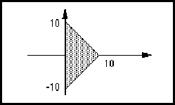

schematicJunctionTemplate ::= '(' 'schematicJunctionTemplate'
libraryObjectNameDef
schematicTemplateHeader
hotspot
{ commentGraphics | figure | <implementationNameDisplay> |
propertyDisplay | schematicComplexFigure }
')'
SchematicJunctionTemplate provides a hotspot and graphics for use by a schematicJunctionImplementation. For schematics, the graphics will typically be either a simple circle to represent a tie dot, or nothing at all.
(schematicJunctionTemplate TIE (schematicTemplateHeader ...) (hotspot (pt 0 0)) (figure GRAPHICS (circle (pt -5 0) (pt 5 0))))
This example shows a simple representation of a tie dot for schematics as a circle, with a hotspot at the center.
schematicJunctionTemplateRef ::= '(' 'schematicJunctionTemplateRef'
libraryObjectNameRef
[ libraryRef ]
')'
!schematicJunctionImplementation
schematicJunctionImplementationRef schematicJunctionTemplate schematicRipperTemplateRef
SchematicJunctionTemplateRef is used to reference a schematicJunctionTemplate, which is held in a library.
(schematicJunctionTemplateRef TIE (libraryRef SYSTEM))
schematicMasterPortImplementation ::= '(' 'schematicMasterPortImplementation'
implementationNameDef
schematicMasterPortTemplateRef
( portRef | localPortGroupRef )
transform
{ <implementationNameDisplay> | <nameInformation> |
<portAttributeDisplay> | propertyDisplayOverride | propertyOverride }
')'
*page *schematicFrameImplementationDetails
port schematicGlobalPortImplementation schematicImplementation schematicMasterPortImplementationRef schematicMasterPortTemplate schematicSymbolPortImplementation
SchematicMasterPortImplementation references a schematicMasterPortTemplate and associates it with a master port or local port group. It provides an implementation of a schematicMasterPortTemplate that may be used in a page to connect a schematicNet or schematicBus to a master port or local port group. Transform is used to position the schematicMasterPortTemplate in the page.
The association between the schematicMasterPortImplementation and a schematicNet or schematicBus is made by the schematicNetJoined or schematicBusJoined.
It is possible to have a schematicMasterPortImplementation without any reference to it from any schematicNet or schematicBus. This would represent a 'floating' connector, which is yet to be connected.
PortAttributeDisplay is used to display the name and other attributes of the port which is referenced by the schematicMasterPortImplementation.
(cluster C1
(interface ... (port VCCA ...) ...)
(clusterHeader)
(schematicView view1
(schematicViewHeader ...)
(logicalConnectivity ...
(signal sigVCC
(signalJoined
(portRef VCCA) ... )))
(schematicImplementation
(page &1 ...
(schematicMasterPortImplementation I1
(schematicMasterPortTemplateRef ...)
(portRef VCCA)
(transform (origin (pt 100 200))))
(schematicNet VCC
(signalRef sigVCC)
(schematicInterconnectHeader ...)
(schematicNetJoined
(joinedAsSignal)
(schematicMasterPortImplementationRef
I1) ...) ...) ...) ...) ...))
In this example, a port VCCA is declared in the interface of the cluster. This port is referenced from signal sigVCC and from the schematicMasterPortImplementation I1. In the schematicNet VCC, the schematicMasterPortImplementation I1 is referenced, as is the signal sigVCC. These references are consistent with one another.
schematicMasterPortImplementationRef ::= '(' 'schematicMasterPortImplementationRef'
implementationNameRef
')'
*schematicBusJoined *schematicNetJoined
port portRef schematicGlobalPortImplementationRef schematicImplementation schematicMasterPortImplementation schematicMasterPortTemplateRef schematicSymbolPortImplementationRef
SchematicMasterPortImplementationRef is a reference to a schematicMasterPortImplementation. It is used to reference a schematicMasterPortImplementation from within a schematicNet or schematicBus to establish connectivity between a master port and the schematicNet or schematicBus.
(schematicMasterPortImplementationRef I1)
This example references a schematicMasterPortImplementation with implementation name I1.
schematicMasterPortTemplate ::= '(' 'schematicMasterPortTemplate'
libraryObjectNameDef
schematicTemplateHeader
hotspot
portDirectionIndicator
{ annotate | commentGraphics | figure | <implementationNameDisplay> |
<portAttributeDisplay> | propertyDisplay | schematicComplexFigure |
<schematicPortStyle> }
')'
port schematicGlobalPortTemplate schematicMasterPortImplementation schematicMasterPortTemplateRef schematicSymbolPortTemplate
SchematicMasterPortTemplate is a template definition for use in schematicMasterPortImplementations. It allows a graphical representation of a port to be defined. It occurs as a library object within a library.
Display slots may be defined to display the attributes of the master port with which the template is associated by the schematicMasterPortImplementation form.
(schematicMasterPortTemplate IN_PORT
(schematicTemplateHeader
(schematicUnits ...) ...)
(hotspot (pt 0 0))
(input)
(figure LINES
(polygon
(pointList (pt 0 0) (pt -10 10) (pt -40 10)
(pt -40 -10) (pt -10 -10) (pt 0 0)))))
This example shows a schematicMasterPortTemplate named IN_PORT with a hotspot at (pt 0 0) and some graphics to represent an input-port symbol, as shown below.
schematicMasterPortTemplateRef ::= '(' 'schematicMasterPortTemplateRef'
libraryObjectNameRef
[ libraryRef ]
')'
!schematicMasterPortImplementation
port portRef schematicGlobalPortTemplateRef schematicMasterPortImplementationRef schematicMasterPortTemplate schematicSymbolPortTemplateRef
SchematicMasterPortTemplateRef is used to reference a schematicMasterPortTemplate.
(schematicMasterPortTemplateRef IN_PORT (libraryRef SYSTEM))
schematicMetric ::= '(' 'schematicMetric'
setDistance
( hotspotGrid | noHotspotGrid )
{ <nominalHotspotGrid> }
')'
!schematicRequiredDefaults <schematicUnits
SchematicMetric establishes scaling for schematics and schematics symbols. It may also declare a grid for hotspots.
(schematicMetric (setDistance (unitRef mm_10)) (hotspotGrid 50))
schematicNet ::= '(' 'schematicNet'
interconnectNameDef
signalRef
schematicInterconnectHeader
schematicNetJoined
{ comment | <schematicInterconnectAttributeDisplay> |
<schematicNetDetails> | userData }
')'
*page *schematicFrameImplementationDetails
schematicNetGraphics schematicSubNet schematicSubNetSet
A schematicNet is a structured representation of connectivity. Structural connectivity allows the ordering of ports to be described, and makes an association between signals, ports and the hotspots of objects that can be instantiated. Each schematicNet is associated with a single signal and with single-bit ports.
SchematicNetDetails provides further details of the net, either in the form of a graphical representation, or as a set of subnets. The schematicSubNets within a schematicNet provide further information on the structure of the connectivity.
SchematicNetGraphics gives details of the graphical implementation of a net.
Two nets with different names on a page may reference the same signal. This means that the two nets are electrically connected.
(page &1 ...
(schematicNet NET1
(signalRef SIG1)
(schematicInterconnectHeader ...)
(schematicNetJoined
(portJoined
(portRef MP1)
(portInstanceRef P1 (instanceRef I1)))
(ripperHotspotRef ...)
...)
(schematicNetDetails
(schematicNetGraphics
(figure GRAPHICS
(path
(pointList
(pt 100 200)
(pt 300 200))))))
...)
...)
This example defines a schematicNet called NET1 which provides the structural connectivity and implementation for all or part of the signal SIG1. The schematicNet NET1 is implemented using a single line from (pt 100 200) to (pt 300 200).
schematicNetDetails ::= '(' 'schematicNetDetails'
( schematicNetGraphics | schematicSubNetSet )
')'
<schematicNet <schematicSubNet
SchematicNetDetails specifies the details of a schematic net or subnet either as graphics, using schematicNetGraphics, or as a further set of subnets using schematicSubNetSet.
schematicNetGraphics ::= '(' 'schematicNetGraphics'
{ comment | figure | schematicComplexFigure | userData }
')'
SchematicNetGraphics is used to describe the graphics of a schematicNet or schematicSubNet.
(schematicNet NET1
(signalRef SIG1)
(schematicInterconnectHeader ...)
(schematicNetJoined
(portJoined
(portRef MP1)
(portInstanceRef P1 (instanceRef I1)))
(ripperHotspotRef ...)
...)
(schematicNetDetails
(schematicNetGraphics
(figure GRAPHICS
(path
(pointList
(pt 100 200)
(pt 300 200))))))
...)
This example defines a schematicNet called NET1 which gives the structural connectivity and implementation for all or part of the signal SIG1. The schematicNet NET1 is implemented within schematicNetGraphics using a single line from (pt 100 200) to (pt 300 200).
schematicNetJoined ::= '(' 'schematicNetJoined'
( portJoined | joinedAsSignal )
{ ripperHotspotRef | schematicGlobalPortImplementationRef |
schematicInterconnectTerminatorImplementationRef |
schematicJunctionImplementationRef |
schematicMasterPortImplementationRef |
schematicOffPageConnectorImplementationRef |
schematicOnPageConnectorImplementationRef |
schematicSymbolPortImplementationRef }
')'
!schematicNet !schematicSubNet
SchematicNetJoined lists all the ports and hotspots that are connected to the schematicNet, or schematicSubNet. It is analogous to schematicBusJoined in schematicBus.
(schematicNetJoined
(portJoined
(portRef MP1)
(portInstanceRef P1 (instanceRef I1)))
(schematicJunctionImplementationRef J1)
...)
This schematicNetJoined indicates that the master port MP1, the schematicJunctionImplementation J1 and the instance port P1 are connected into this schematicNet.
schematicOffPageConnectorImplementation ::= '('
'schematicOffPageConnectorImplementation'
implementationNameDef
schematicOffPageConnectorTemplateRef
transform
{ <associatedInterconnectNameDisplay> | <implementationNameDisplay>
| <nameInformation> | property | propertyDisplay |
propertyDisplayOverride | propertyOverride }
')'
*page *schematicFrameImplementationDetails
schematicImplementation schematicOffPageConnectorImplementationRef schematicOffPageConnectorTemplate schematicOnPageConnectorImplementation
SchematicOffPageConnectorImplementation references a schematicOffPageConnectorTemplate, which is used to represent an off-page connector in a schematic. It may exist in isolation, or it may be associated with a schematicNet or schematicBus. This association is achieved by reference to the schematicOffPageConnectorImplementation from schematicNetJoined or schematicBusJoined.
An off-page connector is intended to be used to represent the fact that a net or bus is continued elsewhere on the schematic on another page. There are no semantic rules governing its use, i.e. it is not illegal if the net or bus is not represented on another page.
Transform is used to position the instance of the schematicOffPageConnectorTemplate in a page.
InterconnectNameDisplay may be used to display the name of the schematicNet or schematicBus with which this schematicOffPageConnectorImplementation is associated.
(page &1 ...
(schematicOffPageConnectorImplementation I1
(schematicOffPageConnectorTemplateRef ... )
(transform (origin (pt 100 200))))
...
(schematicNet NET1 (signalRef SIG1)
(schematicInterconnectHeader ...)
(schematicNetJoined (portJoined ...)
(schematicOffPageConnectorImplementationRef
I1) ...) ...))
In this example, a schematicOffPageConnectorImplementation named I1 is referenced from the schematicNet NET1.
schematicOffPageConnectorImplementationRef ::= '('
'schematicOffPageConnectorImplementationRef'
implementationNameRef
')'
*schematicBusJoined *schematicNetJoined
page pageRef schematicImplementation schematicOffPageConnectorImplementation schematicOffPageConnectorTemplateRef schematicOnPageConnectorImplementationRef
SchematicOffPageConnectorImplementationRef is a reference to a schematicOffPageConnectorImplementation. It is used to reference a schematicOffPageConnectorImplementation from within a schematicNet or schematicBus to establish connectivity between a schematicOffPageConnectorImplementation and the schematicNet or schematicBus.
(schematicOffPageConnectorImplementationRef I1)
This example references a schematicOffPageConnectorImplementation with implementation name I1.
schematicOffPageConnectorTemplate ::= '(' 'schematicOffPageConnectorTemplate'
libraryObjectNameDef
schematicTemplateHeader
hotspot
{ annotate | <associatedInterconnectNameDisplay> | commentGraphics |
figure | <implementationNameDisplay> | propertyDisplay |
schematicComplexFigure }
')'
page schematicOffPageConnectorImplementation schematicOffPageConnectorTemplateRef schematicOnPageConnectorTemplate
SchematicOffPageConnectorTemplate provides a graphical template for a schematicOffPageConnectorImplementation. It has a single hotspot to which the graphics of a schematicNet or schematicBus may be connected.
(schematicOffPageConnectorTemplate OffPC
(schematicTemplateHeader
(schematicUnits ...) ...)
(hotspot (pt 0 0))
(figure LINES
(polygon
(pointList (pt 0 10) (pt 10 0) (pt 0 -10)))))
This example shows a schematicOffPageConnectorTemplate named OffPC with a hotspot at (pt 0 0) and some graphics to represent the symbol, as shown in the figure below.

schematicOffPageConnectorTemplateRef ::= '(' 'schematicOffPageConnectorTemplateRef'
libraryObjectNameRef
[ libraryRef ]
')'
!schematicOffPageConnectorImplementation
page pageRef schematicOffPageConnectorImplementationRef schematicOffPageConnectorTemplate schematicOnPageConnectorTemplateRef
SchematicOffPageConnectorTemplateRef is used to reference a schematicOffPageConnectorTemplate.
(schematicOffPageConnectorTemplateRef OffPC)
schematicOnPageConnectorImplementation ::= '('
'schematicOnPageConnectorImplementation'
implementationNameDef
schematicOnPageConnectorTemplateRef
transform
{ <associatedInterconnectNameDisplay> | <implementationNameDisplay>
| <nameInformation> | property | propertyDisplay |
propertyDisplayOverride | propertyOverride }
')'
*page *schematicFrameImplementationDetails
schematicImplementation schematicOffPageConnectorImplementation schematicOnPageConnectorImplementationRef schematicOnPageConnectorTemplate
SchematicOnPageConnectorImplementation references a schematicOnPageConnectorTemplate which is used to represent an on-page connector in a schematic. It may exist in isolation, or it may be associated with a schematicNet or schematicBus. This association is achieved by reference to the schematicOnPageConnectorImplementation from schematicNetJoined or schematicBusJoined.
An on-page connector is intended to be used to represent the fact that a net or bus is continued elsewhere on the schematic on the same page. There are no semantic rules governing its use, i.e. it is not illegal if the net or bus is not represented elsewhere on the page.
Transform is used to position the instance of the schematicOnPageConnectorTemplate in a page.
InterconnectNameDisplay may be used to display the name of the schematicNet or schematicBus with which this schematicOnPageConnectorImplementation is associated.
(page &1 ...
(schematicOnPageConnectorImplementation I1
(schematicOnPageConnectorTemplateRef ... )
(transform (origin (pt 100 200))))
...
(schematicNet NET1
(signalRef SIG1)
(schematicInterconnectHeader ...)
(schematicNetJoined
(joinedAsSignal)
(schematicOnPageConnectorImplementationRef
I1) ...) ...) ...)
In this example, a schematicOnPageConnectorImplementation named I1 is referenced from the schematicNet NET1.
schematicOnPageConnectorImplementationRef ::= '('
'schematicOnPageConnectorImplementationRef'
implementationNameRef
')'
*schematicBusJoined *schematicNetJoined
page pageRef schematicImplementation schematicOffPageConnectorImplementationRef schematicOnPageConnectorImplementation schematicOnPageConnectorTemplateRef
SchematicOnPageConnectorImplementationRef is a reference to a schematicOnPageConnectorImplementation. It is used to reference a schematicOnPageConnectorImplementation from within a schematicNet or schematicBus to establish connectivity between a schematicOnPageConnectorImplementation and the schematicNet or schematicBus.
(schematicOnPageConnectorImplementationRef I1)
This example references a schematicOnPageConnectorImplementation with implementation name I1.
schematicOnPageConnectorTemplate ::= '(' 'schematicOnPageConnectorTemplate'
libraryObjectNameDef
schematicTemplateHeader
hotspot
{ annotate | <associatedInterconnectNameDisplay> | commentGraphics |
figure | <implementationNameDisplay> | propertyDisplay |
schematicComplexFigure }
')'
page schematicOffPageConnectorTemplate schematicOnPageConnectorImplementation schematicOnPageConnectorTemplateRef
SchematicOnPageConnectorTemplate provides a graphical template for a schematicOnPageConnectorImplementation. It has a single hotspot to which the graphics of a schematicNet or schematicBus may be connected.
(schematicOnPageConnectorTemplate OnPC
(schematicTemplateHeader ...)
(hotspot (pt 0 0))
(figure LINES
(polygon
(pointList (pt 10 10) (pt 0 0) (pt 10 -10)))))
This example shows a schematicOnPageConnectorTemplate named OnPC with a hotspot at (pt 0 0) and some graphics to represent the symbol, as shown in the figure below.

schematicOnPageConnectorTemplateRef ::= '(' 'schematicOnPageConnectorTemplateRef'
libraryObjectNameRef
[ libraryRef ]
')'
!schematicOnPageConnectorImplementation
page pageRef schematicOffPageConnectorTemplateRef schematicOnPageConnectorImplementationRef schematicOnPageConnectorTemplate
SchematicOnPageConnectorTemplateRef is used to reference a schematicOnPageConnectorTemplate.
(schematicOnPageConnectorTemplateRef OnPC)
schematicOtherwiseFrameBorder ::= '(' 'schematicOtherwiseFrameBorder'
schematicOtherwiseFrameBorderTemplateRef
transform
{ propertyDisplayOverride | propertyOverride }
')'
<schematicOtherwiseFrameImplementationHeader
otherwiseFrame schematicForFrameBorder schematicIfFrameBorder schematicOtherwiseFrameBorderTemplate schematicOtherwiseFrameImplementation
Describes the border on a schematicOtherwiseFrameImplementation.
(schematicOtherwiseFrameBorder
(schematicOtherwiseFrameBorderTemplateRef
OTHERWISE_FRAME_BORDER)
(transform (origin (pt 100 300))
(scaleX 3 1) (scaleY 2 1)))
In this example, a border template OTHERWISE_FRAME_BORDER is positioned at 100, 300 and scaled.
schematicOtherwiseFrameBorderTemplate ::= '('
'schematicOtherwiseFrameBorderTemplate'
libraryObjectNameDef
schematicTemplateHeader
usableArea
{ annotate | commentGraphics | figure | propertyDisplay |
schematicComplexFigure }
')'
otherwiseFrame schematicForFrameBorderTemplate schematicIfFrameBorderTemplate schematicOtherwiseFrameBorder schematicOtherwiseFrameBorderTemplateRef
SchematicForFrameBorderTemplate defines a template for the border of a schematicForFrameImplementation.
(schematicOtherwiseFrameBorderTemplate
OTHERWISE_FRAME_BORDER
(schematicTemplateHeader ...)
(usableArea (rectangle (pt 0 0) (pt 1000 1000)))
(figure GRAPHICS
(rectangle (pt 0 -100) (pt 1000 1000))
(path (pointList (pt 0 0) (pt 1000 0))))
...)
This example defines a rectangular border with a lower section outside the usable area for display of the otherwise frame parameters.
schematicOtherwiseFrameBorderTemplateRef ::= '('
'schematicOtherwiseFrameBorderTemplateRef'
libraryObjectNameRef
[ libraryRef ]
')'
!schematicOtherwiseFrameBorder
frameRef otherwiseFrame otherwiseFrameRef schematicForFrameBorderTemplateRef schematicIfFrameBorderTemplateRef schematicOtherwiseFrameBorderTemplate
SchematicOtherwiseFrameBorderTemplateRef references a schematicOtherwiseFrameBorderTemplate.
(schematicOtherwiseFrameBorder
(schematicOtherwiseFrameBorderTemplateRef
OTHERWISE_FRAME_BORDER)
...)
schematicOtherwiseFrameImplementation ::= '(' 'schematicOtherwiseFrameImplementation'
implementationNameDef
otherwiseFrameRef
schematicOtherwiseFrameImplementationHeader
schematicFrameImplementationDetails
')'
*page *schematicFrameImplementationDetails
otherwiseFrame schematicForFrameImplementation schematicIfFrameImplementation schematicImplementation schematicOtherwiseFrameBorder
Names and defines the graphical implementation of an otherwiseFrame on a page. There must be at most one implementation for each otherwiseFrame in a schematic view.
(schematicOtherwiseFrameImplementation
F1implementation
(otherwiseFrameRef F1)
(schematicOtherwiseFrameImplementationHeader
(schematicOtherwiseFrameBorder
(schematicOtherwiseFrameBorderTemplateRef ...)
(transform ...)))
(schematicFrameImplementationDetails ...))
schematicOtherwiseFrameImplementationHeader ::= '('
'schematicOtherwiseFrameImplementationHeader'
{ <schematicOtherwiseFrameBorder> }
')'
!schematicOtherwiseFrameImplementation
otherwiseFrame schematicForFrameImplementationHeader schematicIfFrameImplementationHeader schematicImplementation
This construct gathers together information relating to the otherwise frame implementation as a whole. See schematicOtherwiseFrameImplementation for an example of its use.
schematicPortAcPower ::= '(' 'schematicPortAcPower'
{ <schematicPortAcPowerRecommendedFrequency> |
<schematicPortAcPowerRecommendedVoltageRms> }
')'
<schematicGlobalPortAttributes <schematicPortAttributes
port schematicPortDcPower schematicPortPower
SchematicPortAcPower is used to indicate that an alternating-current power supply is represented by the global port or that the port normally carries alternating current from a power supply.
(setVoltage (unitRef volts))
...
(setFrequency (unitRef Hz))
...
(globalPort PWR
(schematicGlobalPortAttributes
(schematicPortAcPower
(schematicPortAcPowerRecommendedVoltageRms
(mnm 100 120 140)))))
This example describes a globalPort named PWR that represents an alternating power supply of between 100 and 140 Volts rms, nominally 120 Volts rms.
(globalPort PWR2
(schematicGlobalPortAttributes
(schematicPortAcPower
(schematicPortAcPowerRecommendedVoltageRms
220)
(schematicPortAcPowerRecommendedFrequency
50))))
This example shows a globalPort called PWR2 that provides alternating current of 220 Volts rms, 50 Hz.
schematicPortAcPowerRecommendedFrequency ::= '('
'schematicPortAcPowerRecommendedFrequency'
frequencyValue
')'
SchematicPortAcPowerRecommendedFrequency can be used to specify the minimum, nominal and maximum frequency of the power supply for the proper operation of the circuit. SchematicUnits specifies the frequency units.
(setFrequency (unitRef Hz)) ... (schematicPortAcPowerRecommendedFrequency 50)
This specifies that the supply should be a nominal 50 Hz supply.
schematicPortAcPowerRecommendedVoltageRms ::= '('
'schematicPortAcPowerRecommendedVoltageRms'
voltageValue
')'
SchematicPortAcPowerRecommendedVoltageRms is used to specify the minimum, nominal and maximum root-mean-square (rms) voltage of the power supply for the proper operation of the circuit. SchematicUnits specifies the voltage units.
(setVoltage (unitRef volts)) ... (schematicPortAcPowerRecommendedVoltageRms 220)
This specifies that the supply should be a nominal 220 V rms supply.
schematicPortAnalog ::= '(' 'schematicPortAnalog'
')'
<schematicGlobalPortAttributes <schematicPortAttributes <schematicPortChassisGround <schematicPortDcPower <schematicPortEarthGround <schematicPortGround
SchematicPortAnalog indicates that digital information is not transmitted through this port, i.e. the port is an analog port. When used in conjunction with power and ground ports, this indicates that the power/ground is for analog circuits. This attribute may be important for electrical rule checkers and synthesis packages which may need to separate the digital and analog power/ground.
(port X (inputPort) (schematicPortAttributes (schematicPortAnalog)))
This indicates that port X is intended to be an analog input port.
schematicPortAttributes ::= '(' 'schematicPortAttributes'
{ ieeeStandard | <schematicPortAcPower> | <schematicPortAnalog> |
<schematicPortChassisGround> | <schematicPortClock> |
<schematicPortDcPower> | <schematicPortEarthGround> |
<schematicPortGround> | <schematicPortNonLogical> |
<schematicPortOpenCollector> | <schematicPortOpenEmitter> |
<schematicPortPower> | <schematicPortThreeState> }
')'
<port <schematicSymbolPortTemplate
SchematicPortAttributes describes attributes of a port. There is no requirement for the attributes to be accurate or to have a coherent usage within the EDIF description. External electrical rule checkers can check declared port types against the correct usage.
The ieeeStandard construct is available for the description of many more port types than are available directly in EDIF. In the context of schematicPortAttributes, ieeeStandard must strictly refer to IEEE Std. 91-1984, Sections 3.1.1 to 3.1.11, 3.3.1 to 3.3.24, 3.3.27 to 3.4.5 and 4.3.2.1 to 4.3.11.1. For boundary scan port types TCK, TMS, TDI, TDO and TRST ieeeStandard must strictly refer to IEEE 1149.1-1990 Sections 3.2 through 3.6 respectively.
There is no implicit connectivity through the use of schematicPortAttributes. Connections are explicitly described in signalJoined and through the use of defaultConnection. There are no semantic rules in EDIF about how these attributes are used.
These attributes originate from the schematic domain.
In the context of schematicSymbolPortTemplate, the use of schematicPortAttributes indicates the suitability of the template to represent a particular type of port.
(port VCC (unspecifiedDirectionPort) (schematicPortAttributes (schematicPortDcPower))) (port sigout (outputPort) (schematicPortAttributes (schematicPortOpenCollector)))
The first port might be a power port on a 7400-series component. The second example describes a port called sigout that is an open-collector output port.
schematicPortChassisGround ::= '(' 'schematicPortChassisGround'
{ <schematicPortAnalog> }
')'
<schematicGlobalPortAttributes <schematicPortAttributes
port schematicPortEarthGround schematicPortGround
SchematicPortChassisGround is used in schematicPortAttributes to state that the associated port represents a connection to a chassis ground. The description is in accordance with the IEEE standard 315-1975, Sect. 3.9.2.
(port Z
(unspecifiedDirectionPort)
(schematicPortAttributes
(schematicPortChassisGround)))
This example indicates that port Z is meant to connected to a chassis ground externally. Electrical-rule-checking programs might flag an error if it is not connected to a chassis ground.
(globalPort GND
(schematicGlobalPortAttributes
(schematicPortChassisGround)))
This example defines a globalPort called GND that indicates an intended connection to a chassis ground.
schematicPortClock ::= '(' 'schematicPortClock'
{ <ieeeStandard> }
')'
<schematicGlobalPortAttributes <schematicPortAttributes
SchematicPortClock indicates that the enclosing port or global port carries a clock signal.
The optional ieeeStandard construct allows the originating system to add references to specific sections in the IEEE standards. This may add extra attributes to the clock supply that synthesis and rule-check programs might find useful. IeeeStandard in the context of schematicPortClock may reference only the following: IEEE Std. 91-1984, Sections 3.1.1 to 3.1.11, 3.3.1 to 3.3.24, 3.3.27 to 3.4.5 and 4.3.2.1 to 4.3.11.1; IEEE Std. 1149.1, Sections 3.2 to 3.6.
(port phi1 (inputPort) (schematicPortAttributes (schematicPortClock)))
This example describes a port called phi1 that carries a clock signal. The clock signal may get a higher priority from automatic placement and routing tools.